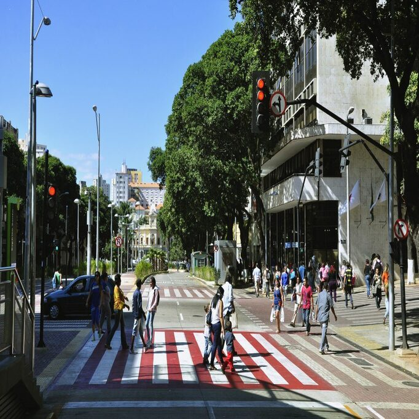
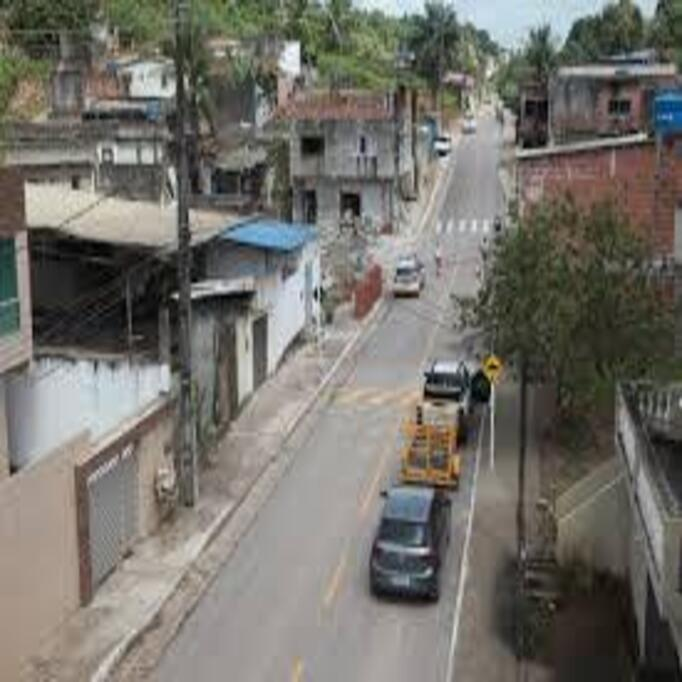
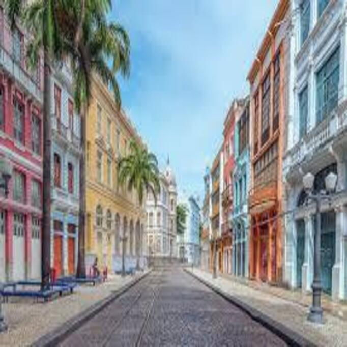
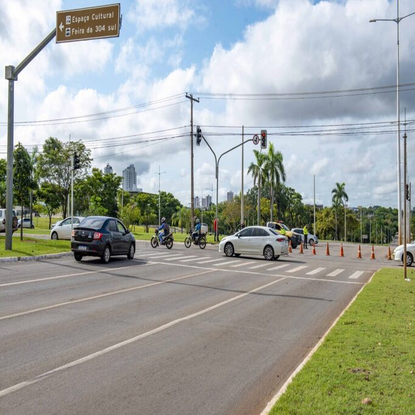
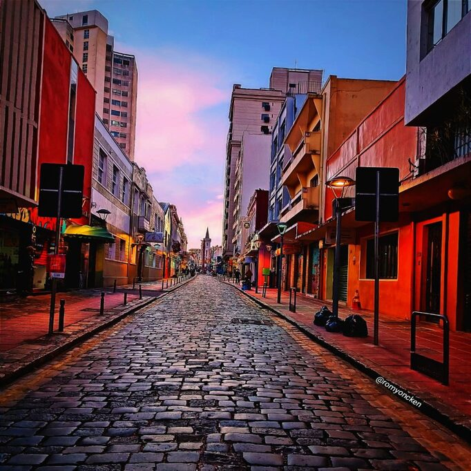

Escolha o grupo de moradores próximos de você para saber das últimas novidades.

Rua 20, Alto Dois Carneiros 433 pessoas

Alto do Cristo, Cavaleiro 933 pessoas

Rua das Ararinhas, Vila Rica 7.382 pessoas

Rua Dois, Dois Carneiros 749 pessoas

Rua da Amizade, Dois Carneiros 156 pessoas